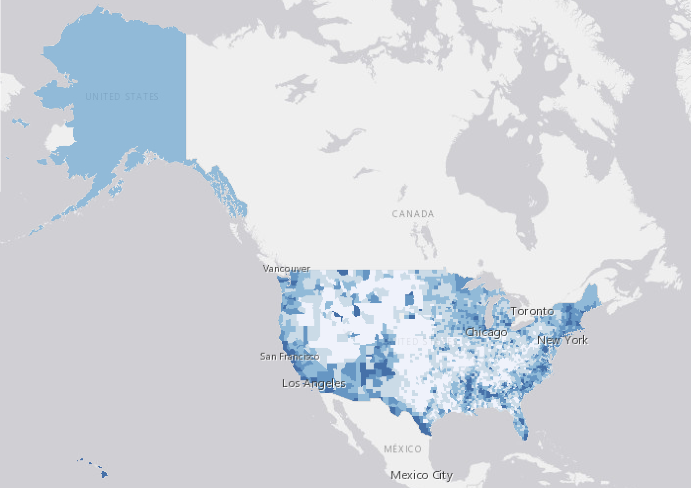
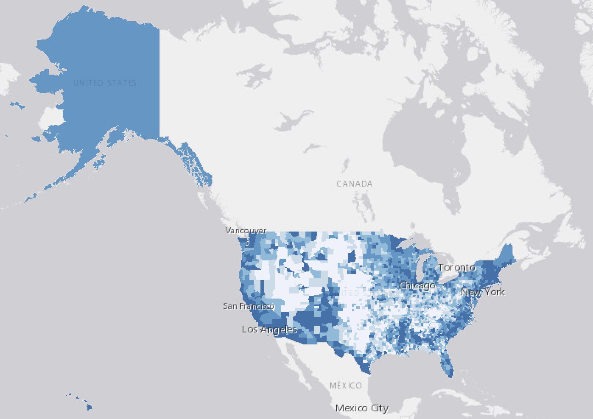
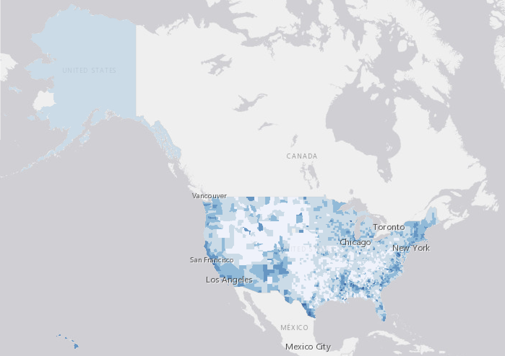
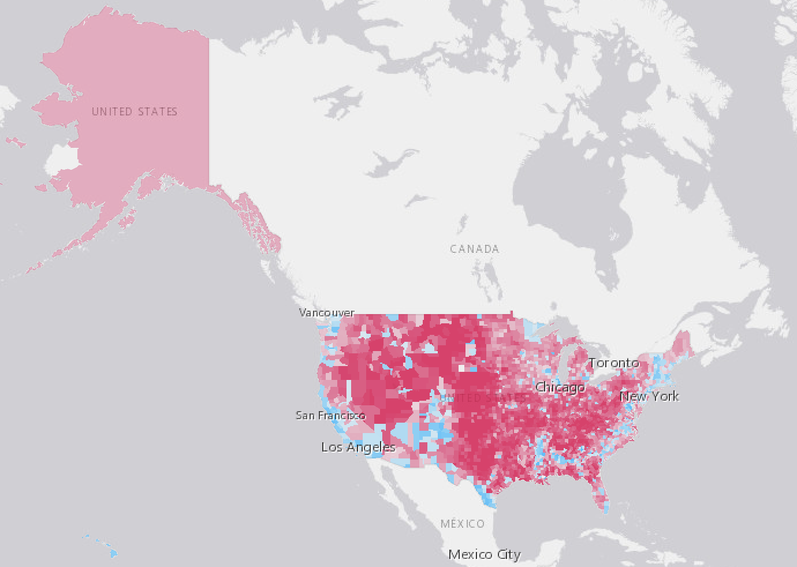
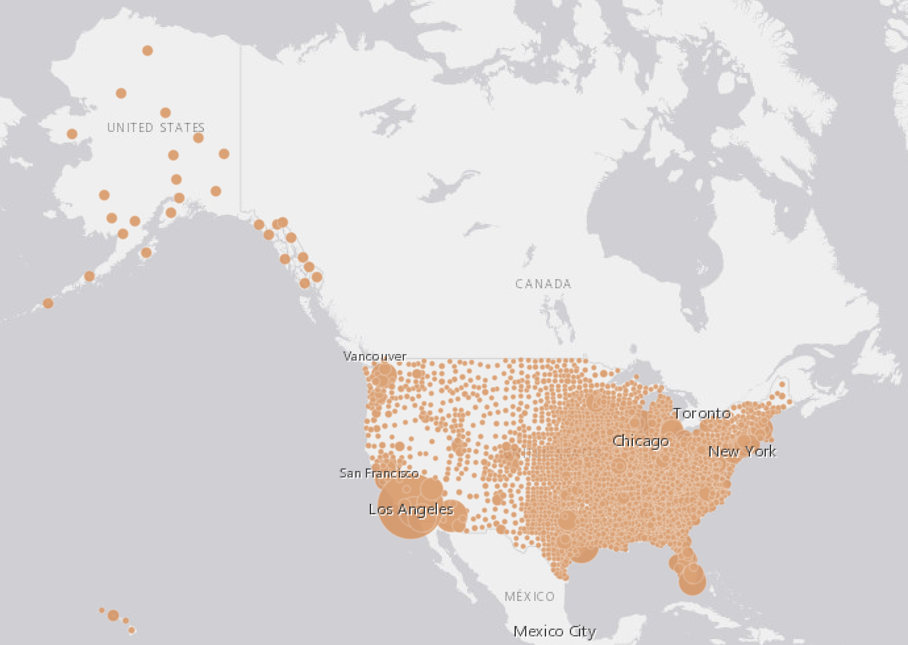
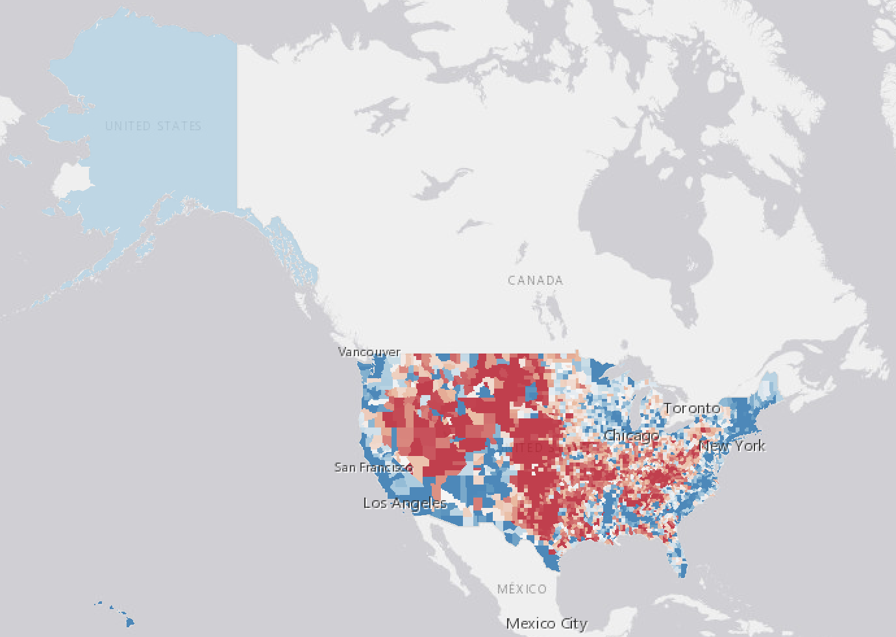
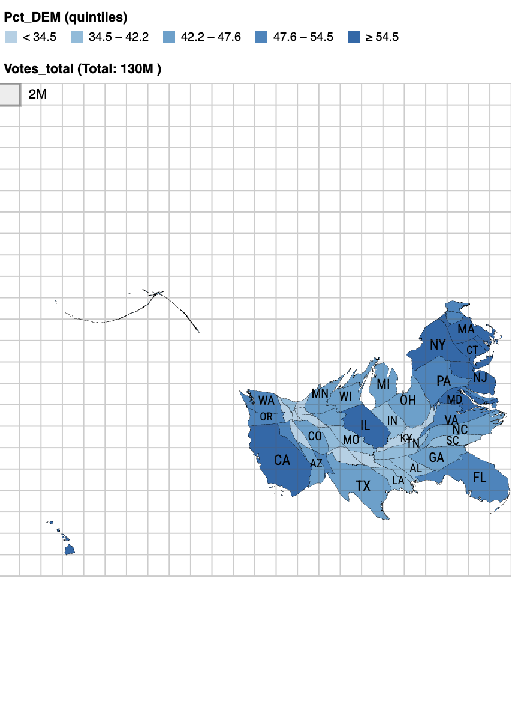

Lab 02 · September 2026
People Vote, Not the Land: The 2016 US Presidential Election, Mapped Four Ways
The question
Where was support for each party concentrated in the 2016 U.S. presidential election, and does that concentration look different depending on whether you measure it by counties, by votes, or by land?
The data
The layer is a county-level 2016 U.S. presidential election results feature layer election_2016,
carrying DEM_votes, GOP_votes, DEM_per, GOP_per, and
votes_total fields. There were three defects I could find inside the file itself:
- An empty
DEM_votesfield. A subset of counties carries no Democratic vote count at all. - An alias that overclaims precision.
DEM_peris stored as a 0–1 proportion (the national county average is 0.32 with a standard deviation of 0.15) but its field alias reads as a percentage. - Alaska duplicated 28×. The same Alaska row is duplicated 27 times beyond the one real record.
I later fixed the Alaska error by removing the 27 extra counts, which takes the raw sums (65,030,312 Democratic, 64,716,166 Republican) down to about 62,519,231 and 61,195,015. The winner doesn't change; the margin roughly quadruples, from ~314,000 to ~1,324,000 votes. What it can't fix is that the certified 2016 result was 65,853,514 Democratic to 62,984,828 Republican, so the corrected sums are still short.
The method
I built the map in ArcGIS Online Map Viewer, using the default web Mercator basemap. I first changed the
layer to predominant category (using hue to indicate the winner of each county between GOP vs. DEM,
darker for a larger margin). I then changed the layer's style to graduated symbol (using the size of the
symbol to represent votes_total). I shifted to the standardized score method, where I used
the following expression to calculate the z-score of each county against the national county average.
// Lab 2 - standardised score for % DEM, 2016
//
// z = (value - mean) / standard deviation
//
// The two constants come from the Statistics panel
// for DEM_per, with no filter applied.
var mean = 0.3174;
var sd = 0.1527;
return ($feature.DEM_per - mean) / sd;
For the classification sweep, I styled the layer as Counts and Amounts (color) on DEM_per,
turned on Classify data, and set 5 classes. I ran the same layer three times, changing only the method
(Equal interval, Quantile, Natural breaks), holding extent and color ramp constant, and screenshotted
each run. Finally, I used go-cart.io to
create a state cartogram (using area resized by total votes cast, colored by Pct_DEM quintile to
represent the statewide total votes and how much the states lean Democratic).
Classification sensitivity — same data, three schemes
Same layer, same extent, same color ramp. Only the classification method changes between rows.
| Scheme | The four break values | Counties in the top class | What this map appears to argue |
|---|---|---|---|
| Equal interval | 0.211, 0.39, 0.57, 0.749 | 43 | In this map, the top class starts at 74.9%, so the map shows that heavily Democratic counties are rare outliers, and slightly Democratic-leaning counties are much more common. it. |
| Quantile | 0.19, 0.251, 0.328, 0.433 | 626 | This map has the top class starting at just 43.3%, and always captures roughly the top fifth of counties (626 of ~3,143) by default. The map is arguing that Democratic-leaning counties are far more widespread. |
| Natural breaks | 0.206, 0.314, 0.438, 0.596 | 198 | The natural break method has the top class at 59.6%, with 198 counties, falling between the equal interval's 43 counties and the quantile's 626. The map argues that meaningfully Democratic counties are a real but modest minority. |



Four views of the same election


votes_total for that county.


Reading the channels
| Map | Visual channel | What it makes easy to see | What it hides or distorts |
|---|---|---|---|
| 1 · Predominant category | Hue | The map shows which party's share was higher, and by how much (via shade). | This map says nothing about votes or population. In the map, a huge, sparse red county carries the same visual weight as a small, dense one, which might lead one to conclude that they have the same voting power. |
| 2 · Graduated symbol | Size | The map effectively shows where the votes actually were, with large circles over Los Angeles, Chicago, and New York correcting the choropleth's land-area bias. | The map says nothing about which party won. Circles especially overlap in dense metro clusters and merge, making individual counties hard to distinguish. |
| 3 · Standardized score | Value (lightness) | This one shows how far a county's Democratic share sits from the comparison population's average, in standardized units. | This map depends entirely on the reference population, which in this case is the national average. If we change the reference, every county's z-score and color changes as well. It also inherits the layer's own data-quality problems, since the average and standard deviation were computed from the data. |
| 4 · Cartogram | Area | The cartogram corrects for the unequal population and votes cast distribution at the state level: high-population states like California and New York gets appropriate visual weight, while states with small populations shrink. | In this map, recognizable state shapes are lost, so it's harder to orient. Aggregating to state quintiles also removes the county-level texture in maps 1–3, so a state can look uniform when it contains a real mix of red rural and blue urban counties. |
What I found
By predominant category, the GOP's share was higher in 2,555 counties, the DEM's in 408. Nonetheless, Figure 2's graduated symbols show a large share of actual votes sitting inside a small number of high-population counties, including Los Angeles, Chicago, and New York, that are barely visible in a county tally. We further see this phenomenon in Figure 4, where the cartogram is heavily distorted, with small populated states like New Jersey being much larger than Alaska, the largest US state by area.
Across the three schemes for the standardized score method, the number of counties in the top class ranges from 43 counties (equal interval) to 198 (natural breaks) to 626 (quantile). Equal interval and quantile sit at opposite extremes since the equal interval classification slices the value range into equal-width bins, while the quantile forces a fixed count regardless of where the data clusters. Natural breaks land in between since it locates an actual gap in the distribution, which is more meaningful in classification.
The scheme I'd publish
| Report | Yours |
|---|---|
| The scheme, named | Natural breaks. Equal interval slices the value range into equal-width bins, and quantile forces a fixed one-fifth into the top class, no matter what the data looks like. Natural breaks locate an actual gap in the distribution, so the 198-county, 59.6% threshold reflects where the Democratic vote share genuinely clusters. |
| The class count, and why that count | 5, which falls within the recommended 4-7 range. This means that a reader can still tell the hue difference apart. |
| One alternative scheme, mapped, and what changed | If the equal interval method is used, the top class shrank from 198 counties to 43 (about a 4.6x drop), while the top threshold rose from 59.6% to 74.9%. The map empties nearly all of the natural breaks' cluster, keeping only the most extreme Democratic counties. |
| The claim you would still make if the scheme changed | The Democratic vote share is concentrated in a minority of counties under every scheme. Only how large that minority looks changes if the scheme change: from 1.4% (equal interval) to 6% (natural breaks) to a fifth (quantile). |
Written reflection
I published natural breaks and set aside equal intervals, which would have shown a more dramatic pattern: only 43 counties above 74.9% Democratic share, compared with 198 above 59.6% using natural breaks. Equal interval is not necessarily wrong, but the cutoffs do not reflect where the data is clustered. Natural breaks do this better because it placed the line at 59.6%, where there is an actual gap in the data, rather than just dividing the whole range into five equal sections. If I had only shown the equal-interval map without saying which scheme I used, a reader might come away thinking there were many fewer Democratic counties than there actually are.
The z-score map centers on 32%, the national average of each county's Democratic share. This is not the national vote share (about 51%); it is instead the average county, and most counties are small, rural, and Republican-leaning. Centering there makes a deeply red county the map's baseline, so a county at 40% Democratic would appear as blue-leaning, even though the GOP carried it by a large margin. I would center the ramp on the vote-weighted national share instead, so the color break tracks who actually won the votes, not what the typical county looks like.
One way this map could be used is to help a campaign decide where to send volunteers or spend money on voter outreach. If a county with 40% Democratic support appears blue because the midpoint is 32%, it could make that county look more Democratic than it actually is. Meanwhile, heavily Republican counties might look less important for Democratic outreach, even though there may still be voters there who need things like registration or turnout support.
What this does not show
None of these maps show third-party voters or non-voters — DEM_per and
GOP_per are shares of the two-party vote, not of eligible adults, so a closely-divided
county can still have a large share of residents represented by neither color. The cartogram's state-level aggregation also means the map does not have
the county-level resolution that the other three maps do.
AI use: AI-assisted for tidying the HTML in the lab entry, using Claude. I verified it by opening the page on a phone and a laptop and confirming no external resources were added. The analysis, the parameter choices, and the interpretation are my own.